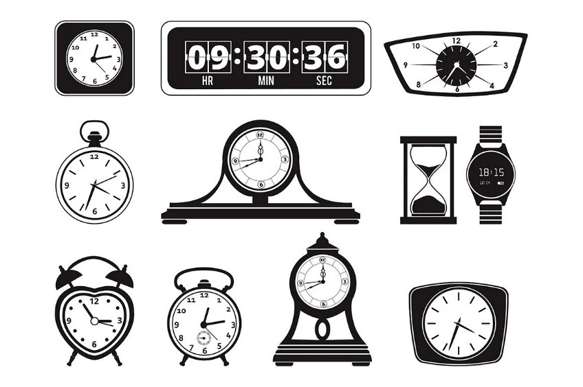

Chapter One
Make a tool to measure time
“While computers were used like wood, string, and electricity as material to mess about with, they evolved into something else…”
Seymour Papert.Computer as Material: Messing about Time (1988)
Background
Do you feel that time seems to be going by faster as you get older?
Can you remember a period in your life where time seemed to stretch on forever?
Time Perception is a scientific field exploring how the human perception of time is malleable, subjective, and changing based on circumstances and our psychological state. It is no surprise, that the perception of time is also a fundamental consideration for the design of digital interactions and experiences. In this open-ended project, you are asked to create an time-keeping device which facilitates a novel experience for a user regarding the passage of time.
Requirements
- You must use JavaScript for at least part of project
- This is at the start of class #5